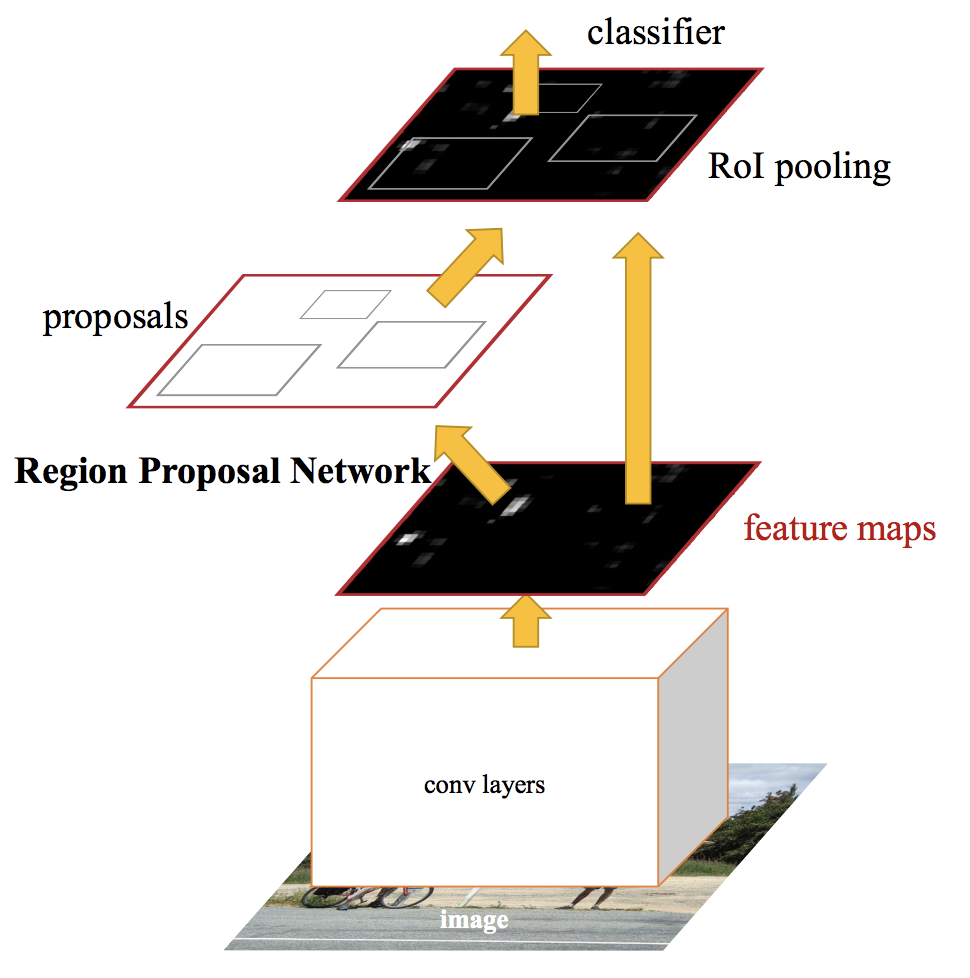

Motivation
In the task of object detection, there is not a fixed number of objects in the image and everyone should be detected theoretically.
The naive approach is to take many RoI (Region of Interest) and use methods of classification.
It’s computationally expensive to classify all of regions. Therefore, R-CNN, Fast R-CNN etc are designed to make the procedure fast.
R-CNN
Rich feature hierarchies for accurate object detection and semantic segmentation
Methodology
- Using selective search algorithm to extract region proposals
- Using CNN to extract features for each region proposal
- Classifying regions
- SVM
- Predicting other four values to show offsets to increase precision of bounding box
Problems
It’s computationally expensive for both train and test because you must classify around 2k region proposals.
Fast R-CNN

Methodology
Region proposals on convolutional feature map
Convolutional layer only uses once per image
Classify each RoI
- Softmax
Problems
Region proposals are bottlenecks in Fast R-CNN.
Faster R-CNN
Faster R-CNN: Towards Real-Time Object Detection with Region Proposal Networks

Motivations
Selective search algorithm is a slow process
Selective search slows down the test, and we want to accelerate the process of test
Methodology
- Adding a separate network – Region Proposal Network (RPN) to replace the selective search in Fast R-CNN
Test Results

Faster R-CNN can use in real-time object detection